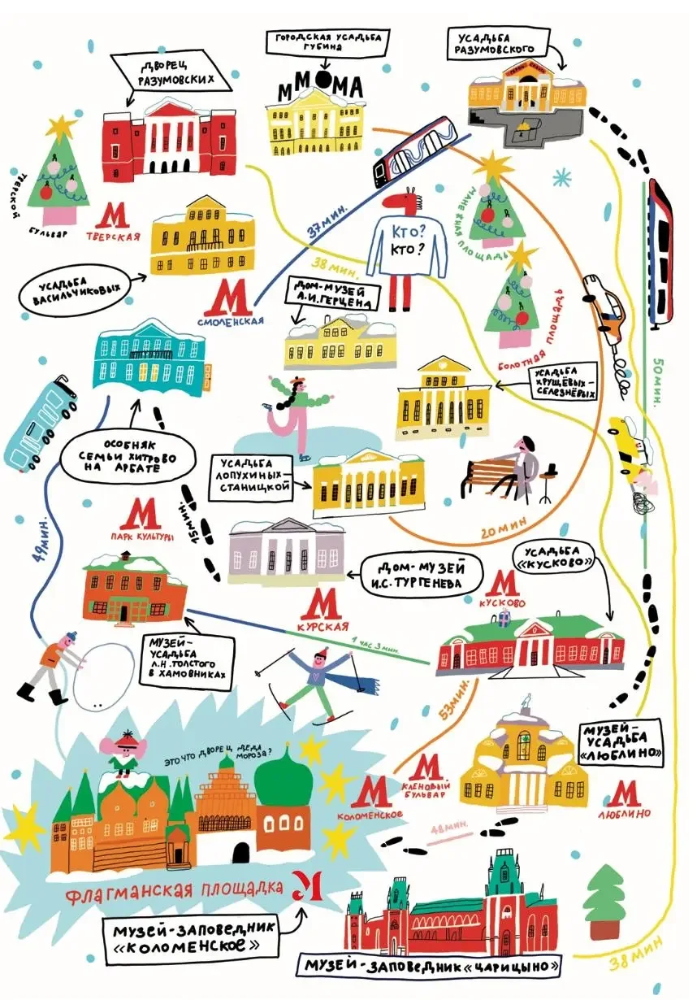
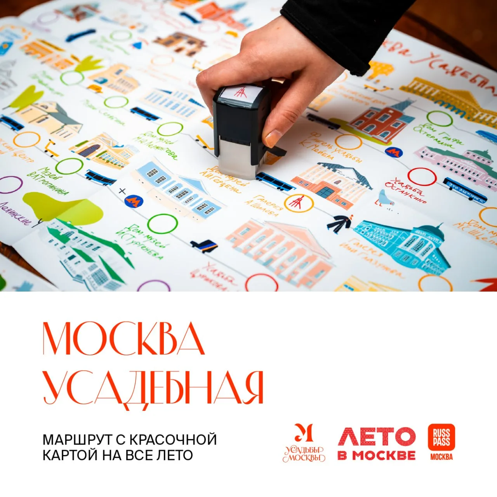
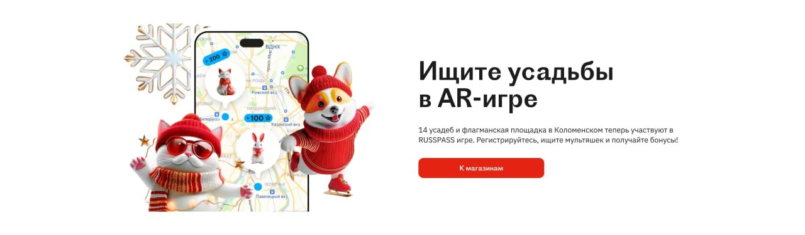
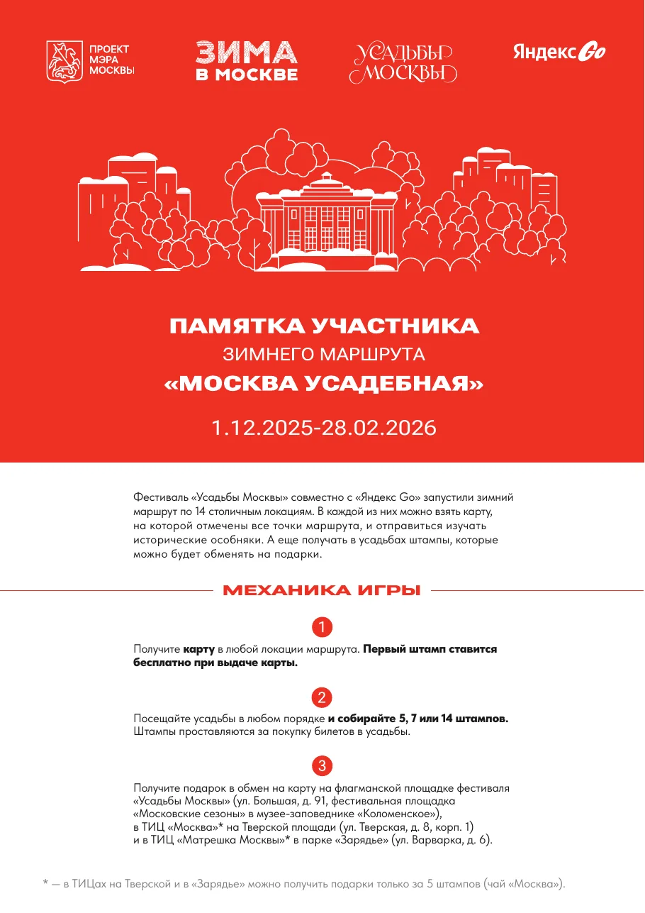
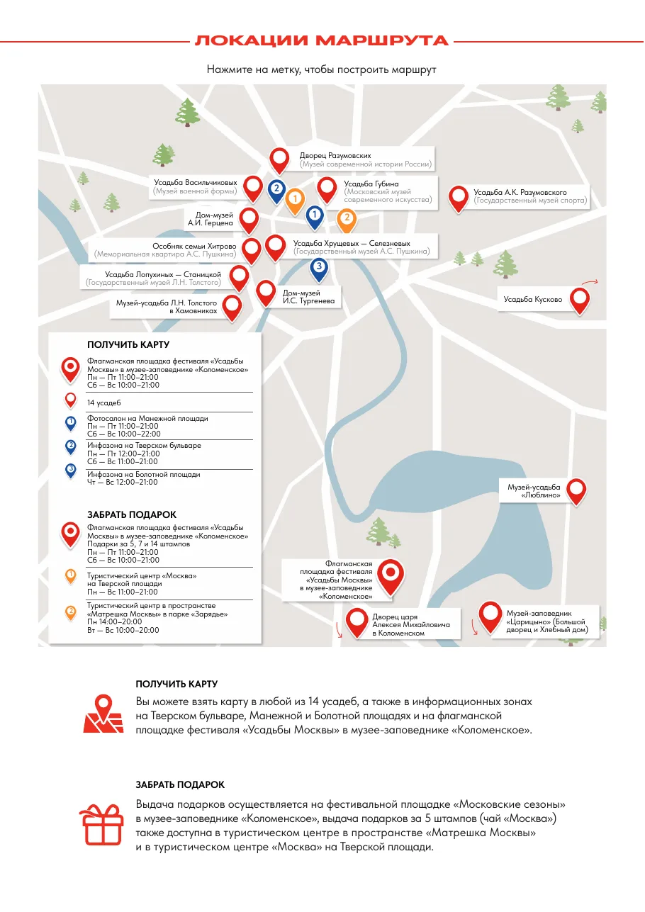

Проектный офис × Яндекс Go, 12.2025–02.2026
Зимний маршрут «Москва усадебная» с Яндекс Go
Зимний маршрут фестиваля «Усадьбы Москвы» вместе с Яндекс Go: берёшь карту, ходишь по 14 усадьбам, собираешь штампы за билеты и меняешь их на подарки. Я собрал усадьбы, собрал фактуру для разработки концепции нарисованной карты, писал правила, отвечал за лендинг проекта и памятку и отвечал за подарки.
14усадеб в маршруте
5 / 7 / 14штампов — три уровня подарков
3 месяцадлился проект: с декабря по февраль
Результат
Получили поддержку от Яндекс Go (in-app пуши), запустили маршрут на 3 месяца, с декабря по февраль: 14 усадеб, нарисованная карта, штампы и подарки, вместе с Яндекс Go.
Как измеряли
Метрики маршрута остались у команды фестиваля.
Что сделал я
- Выбирал усадьбы для маршрута.
- Интегрировал 14 усадеб и площадку в Коломенском в AR-игру RUSSPASS: игрок ходит около локаций, ищет мультяшных персонажей в AR-расширении и получает за это бонусы.
- Собрал интересные факты о каждой усадьбе, по которым Яндекс сделал иллюстрации.
- Отвечал за подарки и их доставку.
- Написал подробные правила маршрута и задизайнил интерактивную памятку участника: механика, где взять карту, как получить штамп, где забрать подарок, ответы на частые вопросы и так далее. С удовольствием поделюсь этой памяткой по запросу.
Экраны






Как вам кейс?
Telegram